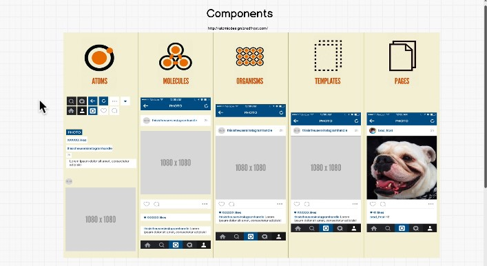
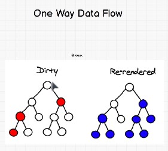

react is a view library created by Fb in order to be able to have multiple developers working on the same time at the website
- React is made up of components (lego blocks to be combined)- atoms -> molecules -> organisms -> templates -> pages

- Each component is independent and it has its own functionality - it reduces dependencies -can be used anywhere in the app
- One way data flow - if a component is changing only its children know about it and change accordingly, not the parents
Virtual DOM - as a dev we know that we need to reduce the DOM manipulation as the JS Engine (V8in chrome) slows the performance and is difficult to organize it - creates bugs
React Bot will take care of the DOM manipulation as it will create a Virtual DOM and it will paint the canvas in the most efficient way

-
in order to update a package - you just need to go in the package.json file (where all the packages and their versions are) and manually update it to the latest version
2- run npm install - and all the packages will be installed
npx - npm package installer -
make sure the update doesn't break the app - in large projects there is a person that takes care of this updates
- React allows us to use different css files for each component
- React has webpack underneath the hood and does the bundling for us - which means we can use "import"(./ - used if the files are in the same directory) to use other files
- Conceptually a component is like a js function that accepts arguments - as props(properties) - and return React elements to be displayed on the page
- We recommend naming props from the component’s own point of view rather than the context in which it is being used.
- React components need to always be named with capital letters, otherwise the DOM will interpret it as the DOM tags (html tags)
- All React components must act like pure functions with respect to their props.- do not attempt to change their inputs, and always return the same result for the same inputs.
- a component has to always render something
- when building a component the name will always be capital - as the classes name
inside the component class - always - render(){return (....)}
the component needs to be exported (using "default - only if exports 1 thing") from the definition file and imported in the file that will use it
if the file exports more that one element , no default & in the importer file we need to destructure it: import {robots, turtles} from ./'fileName'
- Extracting components might seem like grunt work at first, but having a palette of reusable components pays off in larger apps. A good rule of thumb is that if a part of your UI is used several times (Button, Panel, Avatar), or is complex enough on its own (App, FeedStory, Comment), it is a good candidate to be extracted to a separate component.
- JSX(javascript xml) - it allows you to write the html syntax inside the js files - is what react uses to create the components - Any line that start with the "<" character starts a JSX block.
- tachyons - like bootstrap for react - by using the classNames provided it allows to add style easier to jsx
- in the index you can define properties for the component
to be used in the component file definition {this.props.greeting}

- the props are the properties we keep passing down read more
- STATE is the description of your app - and is definitely able to change - it usually leaves in the parent component
Props are simply things that come out of "state"
So a parent feeds "state" into a child component and as soon as a child (components) component receives a
"state" it's a property. That child can never change that property. The parent just tells it what the "state"
is and the child receives it
the components that have a state are called smart components - and cannot be simple functions - need to have the class sintax
- In the component you need to return only 1 thing - 1 div, 1 array
and is the same in the index, ReactDOM.renders only 1 element, so you better wrap your multiple components in a div ;)
- One thing you will notice with React is that because we always have to return just one element from a component, we end up wrapping a lot of our components in divs.
BUT WHAT ABOUT SEMANTIC HTML YOU TAUGHT US ABOUT IN THE HTML SECTION ANDREI!??!!
You are right! React realized this was an issue, and with the newer version of React 16.2, they introduced something called Fragment to fix this issue. You can read about it here
- when we want to iterate in react we need to give a key to the element that is returned from the loop, so the DOM can keep track of the resulted elements and be able to identify it when we want to delete one them, for example
- life cycle hooks - react build in functions that run in a specific order without being called - if are included in a component will run in a pre build order
Check the react documentation
- .fetch is a method of the window object and is a used to make request to the servers
- each element in react has a build in method called .child()
is useful to create a functionality around an element, by making it a child and adding "custom tags around it" - see 'scroll' tags and component in robofriends